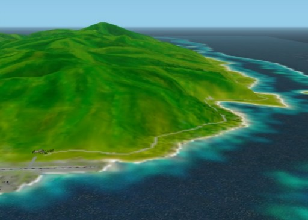
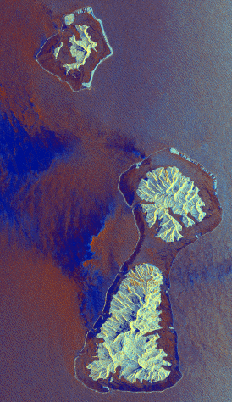
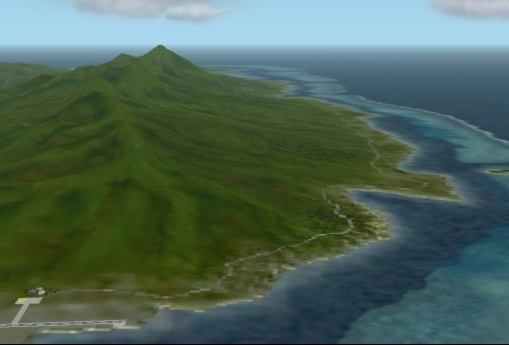

Fat Raiatea
... from the various topics of my scenery design

Fat Raiatea
... from the various topics of my scenery design

The above picture is Raiatea created based on the contour line.
Since the mountains consisted of polygons,
I designed considering so that each polygon may connect smoothly.
It became the island of soft appearance
and became a result satisfactory as me.
When I began making the texture,
I found following image on the web page of NASA.

I felt let down when I looked at the picture.
The expression of the island is stern like a back of dinosaur,
it seems to have shaved all flab from the island which I designed.
However, I redesigned Raiatea once again.
It is difficult to design a sharp form like Raiatea by polygons.
The results of efforts is the following picture.

The above picture is Raiatea created based on the contour line. Since the mountains consisted of polygons, I designed considering so that each polygon may connect smoothly. It became the island of soft appearance and became a result satisfactory as me.
When I began making the texture, I found following image on the web page of NASA.
I felt let down when I looked at the picture. The expression of the island is stern like a back of dinosaur, it seems to have shaved all flab from the island which I designed.
However, I redesigned Raiatea once again. It is difficult to design a sharp form like Raiatea by polygons.